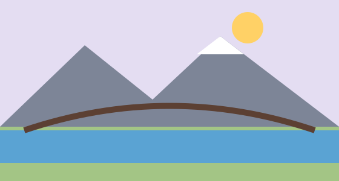

Velorouten rund um Fiktal
Karte der Velorouten

Mit den Pfeiltasten lässt sich die Karte verschieben.
- Seerunde: 18 km, flach
- Hügelroute Sonnhalde: 26 km, 420 Höhenmeter
Karte der Velorouten

Mit den Pfeiltasten lässt sich die Karte verschieben.